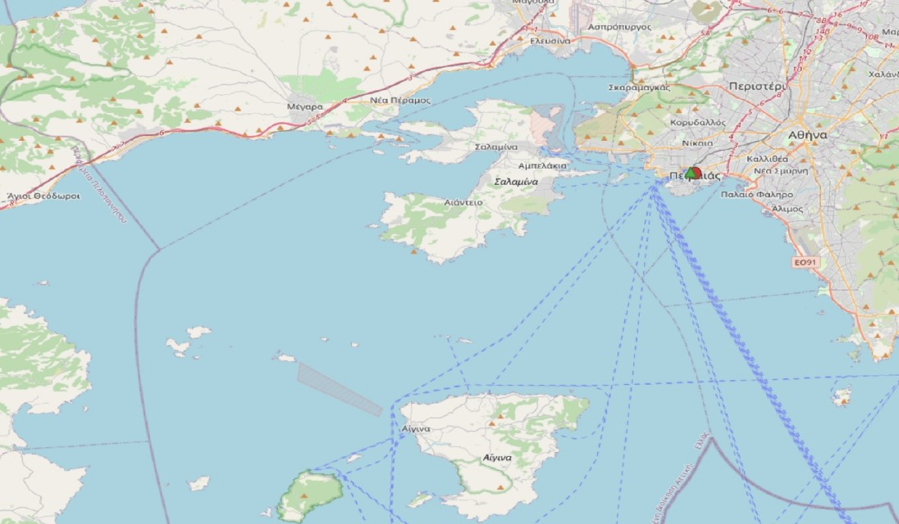
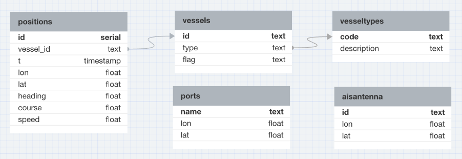
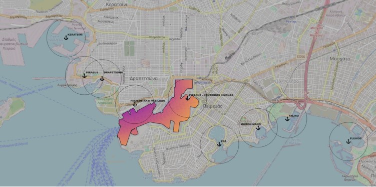
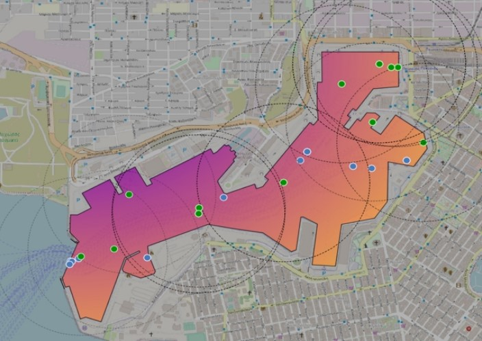
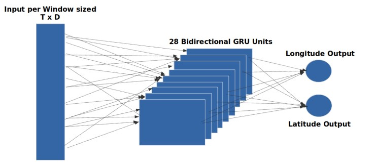
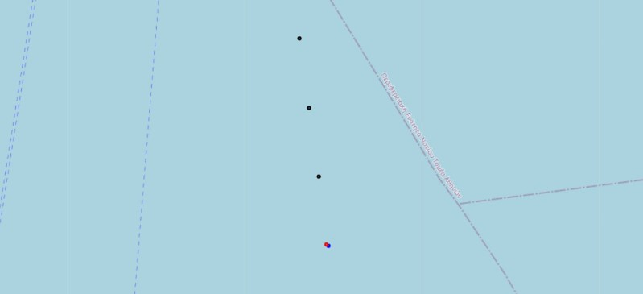

Database Setup & Data Collection
Establish a spatial database called thalassaDB to store raw AIS data. The data tracked vessels in the Saronic Bay area, focusing on passenger vessels visiting Piraeus Port. The AIS data includes vessel IDs, locations, timestamps, speed, and other movement details, making it ideal for trajectory prediction.
- Data Collection: Collected AIS data using the University of Piraeus’ AIS antenna. 
- Database Design: Designed the database schema using PostgreSQL with PostGIS extension. 
- Data Filtering: Filtered out irrelevant data to focus on vessels in motion.
Data Exploration & Geospatial Queries
After the data was collected and stored in the database, conducted a detailed exploration using SQL queries to extract key vessel information, such as vessel IDs, speed, course, and distances between vessels and ports. This phase was critical in identifying trends and relationships within the data.
- Port Geospatial Data Integration: Enhanced the database with port locations and geometries to allow for spatial analysis. Discovered some AIS data points that have inconsistencies. 
- Spatial Queries: Used spatial queries to identify vessels within a specific distance from Piraeus Port, such as "Which vessels are within 0.5 nautical miles of Piraeus Port?"
- Spatiotemporal Queries: Unique pairs with a time difference between them of less than 30 seconds. 
Data Cleaning & Feature Engineering
Cleaned the raw AIS data to address missing values, outliers, and timestamp issues. Then, new features were engineered for create vessel trips and trajectories.
- Temporal and Speed Consistency: The initial step focused on ensuring that the dataset maintained consistent temporal and speed values. Sudden fluctuations in speed were often indicative of GPS errors, so rolling averages were applied to smooth out these values. Records with speeds exceeding the maximum allowable limits for each vessel type were filtered out to maintain realistic behavior.
- Spatial Cleaning with R-tree Indexing: To ensure the spatial accuracy of vessel positions, R-tree spatial indexing was employed. This technique helped filter out erroneous data points, such as instances where a vessel appeared to travel unrealistic distances in a single timestamp. Spatial joins with port locations were also performed to confirm that vessels were appropriately located near ports when expected.
- Feature Engineering Based on Vessel Status Classification: The dataset was enriched by categorizing vessel statuses (e.g., at anchor, underway using engine, engaged in fishing) based on operational conditions. This classification was determined using vessel speed, type, and port associations. The data was then divided into trips and trajectories, with trips defined by key status changes and trajectories tracking movements between these changes.
- Handling Missing Data & Converting Trajectories: After cleaning the data and trajectories creation, we encountered missing positions in the AIS dataset, which were common in areas with weak GPS signals or due to transmission errors. To address this, we used linear interpolation to fill in the gaps between existing data points. This process ensured that vessel trajectories were continuous and accurately represented. By performing interpolation at 30-second intervals, we created a uniform dataset that could be effectively used for model training. This step effectively transformed each vessel's trajectory into a time series format, where data points were organized chronologically.
Model Development
Developed machine learning models, including Bi-GRU, a type of Bidirectional Recurrent Neural Network (RNN), to predict vessel trajectories. The performance metric were evaluate the model is the RMSE.
- Model Architecture: 
- Bi-GRU Neural Networks: The model was designed to process input sequences of vessel positions (longitude and latitude) along with features like distance from the previous signal and course direction. We used sliding windows of 14 time steps, enabling the model to learn from both past and future vessel movements.
- Model Tuning: Hyperparameters were optimized and includes a learning rate scheduler to improve accuracy.
Model Evaluation
Train and Evaluated model performance using real-world AIS data, comparing the predicted trajectories with actual vessel locations to assess prediction accuracy.
- Traning Model: The model was trained with a batch size of 16 for 95 epochs.The model minimize the validation loss and training loss and stop before starts overfitting.
- Performance Metrics: The model achieved an RMSE of 23.21 meters, indicating that, on average, the predicted vessel positions were within 23.21 meters of the true positions.
- Location Prediction: Predicted vessel locations (red point) and compared them with actual data (blue point). 